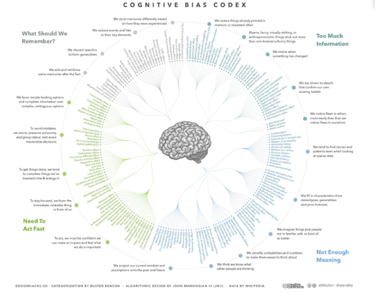

Elegí una carta
Vamos a empezar el efecto con una frase típica del mundo de la magia: elegí una carta.
Ahora cerrá los ojos y repetí el nombre de la carta elegida 10 veces en voz alta, así la recordarás después. Además, al decir su nombre en voz alta hará que las vibraciones psíquicas de tus pensamientos se extiendan mucho más allá de donde sea que estés y lleguen a mí, donde mi cerebro las percibirá. Para cuando termines de leer éste post intentaré decirte con precisión qué carta elegiste.
Ah, y una cosa más que es muy importante: si te saltás el post hasta ell final la magia no tendrá ningún efecto y el truco no va a funcionar. Como todo en la magia, vos, el espectador, tenés que estar dispuestos a participar porque la magia no involucra sólo al mago, sino a la audiencia también. Entonces en lugar de saltearte el post hasta el final, cerrá los ojos y repetí el nombre de tu carta elegida 10 veces más en voz alta para asegurarte de recordarla bien.
Éste cuadro (no es necesario leerlo para entender el punto) nos muestra que el cerebro tiene muchas formas diferentes para desenvolverse en un mundo peligroso en el cual nuestros ancestros debían procesar rápido mucha información del entorno que los rodeaba y actuar con rapidez (es decir, decidir si huir de un animal o luchar contra él y comérselo).
El cuadro clasifica los sesgos cognitivos en cuatro grandes problemas que los cerebros de nuestros antepasados debían resolver: enfocarse en los detalles importantes al estar rodeados de mucha información, saber cuáles de esos detalles recordar para futuras situaciones, encontrar el significado en esos recuerdos, y actuar rápido cuando la ocasión lo requiriera.
Para resolver esos problemas siempre presentes nuestros cerebros deban ceder ciertas cosas para priorizar otras. Por ejemplo, actuar rápido necesariamente sacrifica algo de precisión, ya que la necesidad de una acción rápida no da tiempo para reflexionar sobre toda la información que se nos presenta. Por lo tanto, nuestros cerebros tienen un sesgo cognitivo para simplificar situaciones complejas que nos permitan actuar con rapidez.
Aquí hay un ejemplo de ése sesgo de acción:
Teniendo ésta frase en inglés, contá todas las letras F:
Finished Files Are the Result of Years of Scientific Study Combined With the Experience of Years.
Mucha gente suele encontrar 3 letras F, cuando en realidad de hecho hay 6, porque ignoran las 3 que se encuentran en of's. Si éste es tu caso no estás solo. La mayoría de las personas aprendieron que el verdadero significado lingüístico rara vez está en un of, permitiendo que ésa simple palabra se pase por alto en favor de palabras más relevantes con mayor significado.
Y ahí tenemos un ejemplo de cómo la magia funciona: el cerebro se enfoca en lo que espera que tenga un significado, mientras que automática e inconscientemente descarta lo que no espera que tenga sentido. Todos los buenos magos saben esto, aprovechándose de tus expectativas ya incorporadas, y trazando cuidadosamente una secuencia de eventos para evitar que tu cerebro se desvíe del camino por el que (el mago) desea llevarlo.
Por ejemplo, un mago dirá en el escenario que es capaz de cortar a su asistente a la mitad (con ésto el mago está introduciendo una expectativa en tu mente). Luego, reforzando ésa expectativa, hará que su asistente se meta dentro de una caja larga (reforzando aún más su narrativa y llevando a tu cerebro por el camino que él desea). Finalmente cumpliendo su promesa, el mago corta la caja usando una sierra en dos mitades y las separa, mostrando que a pesar de todo su asistente sigue ilesa. Es magia.
Excepto que el mago tiene dos asistentes, una bien doblada en sí en la mitad delantera de la caja sacando sólo su cabeza, y la segunda vistiendo exactamente la misma ropa y zapatos que la primer asistente, doblada en sí en la otra mitad de la caja dejando sólo sus pies fuera de ella. De ésta forma, lo que tu cerebro percive como una sola mujer cortada a la mitad (porque eso es lo que se espera ver), son en realidad dos mujeres ocultas en dos mitades de la caja.
Ahí lo tenés. La magia funciona porque tu cerebro simplifica demasiado el mundo, viendo lo que espera ver mientras ignora lo que no espera ver.
Aunque los sesgos cognitivos del cerebro son la base de todos los espectáculos de magia que tanto nos divierten, tienen también un lado oscuro. Por ejemplo, los estafadores también saben cómo explotar las expectativas (y los deseos) para engañar a tu cerebro y robarte.
Hablando de estafadores, veamos si logré engañarte con la creencia de que repitiendo en el nombre de una carta 20 veces en voz alta las vibraciones psíquicas de tu cerebro llegarían hasta mí sin importar la distancia, permitiéndome que, mágicamente, adivinara tu carta elegida.
¿Preparado? ¿Allá vamos!:
Mirá el set orginal de cartas que te mostré. Falta la carta que elegiste ¿cierto?
¿Cómo lo hice? ¡Magia!
Ahora, si el truco no funcionó (a veces pasa) lamento decepcionarte. Pero en caso de que sí haya funcionado te invito a que intentes averiguar cómo lo hice re-leyendo con cuidado éste mismo post. Todas las respuestas están aquí, son pequeños detalles; sólo tenés que evitar que tu cerebro, en su eterna búsqueda de la simplicidad, los pase por alto.